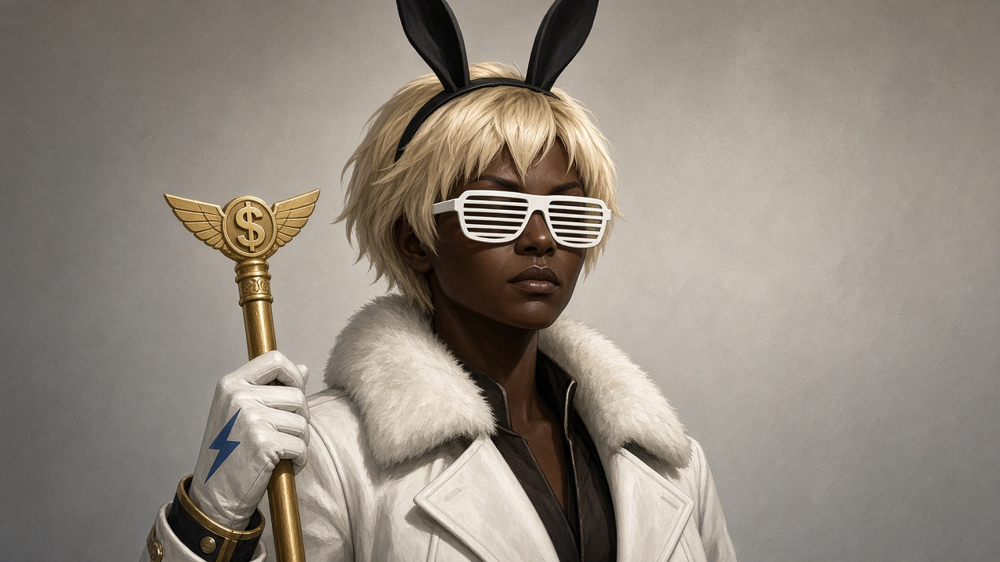
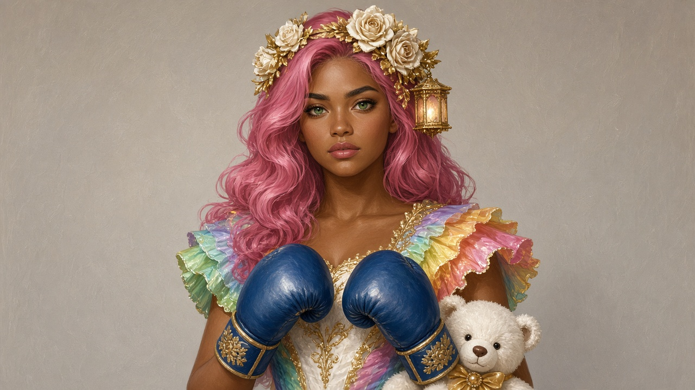

搞笑中央
非政治宣傳
團結緊張嚴肅活潑 · 第一屆中央大會 12月24日

總書記 · RegginA

副書記 · RegginO
NumbahWan · 總書記廳
牆上主掛＝主席 / 副主席
标准像
（半身、淨底）— 不是遊戲 UI 貼進金框。
大會
12月24日
入會
Join Freely
Lv
7 · 22/30
想来就来 · Join
Evidence · 标准像 stilts（對照 L1/L2 特徵，非原圖貼上）
主席像 stilt · traits ← refs/gs-costume.jpeg
副主席像 stilt · traits ← portraits/reggino.jpg